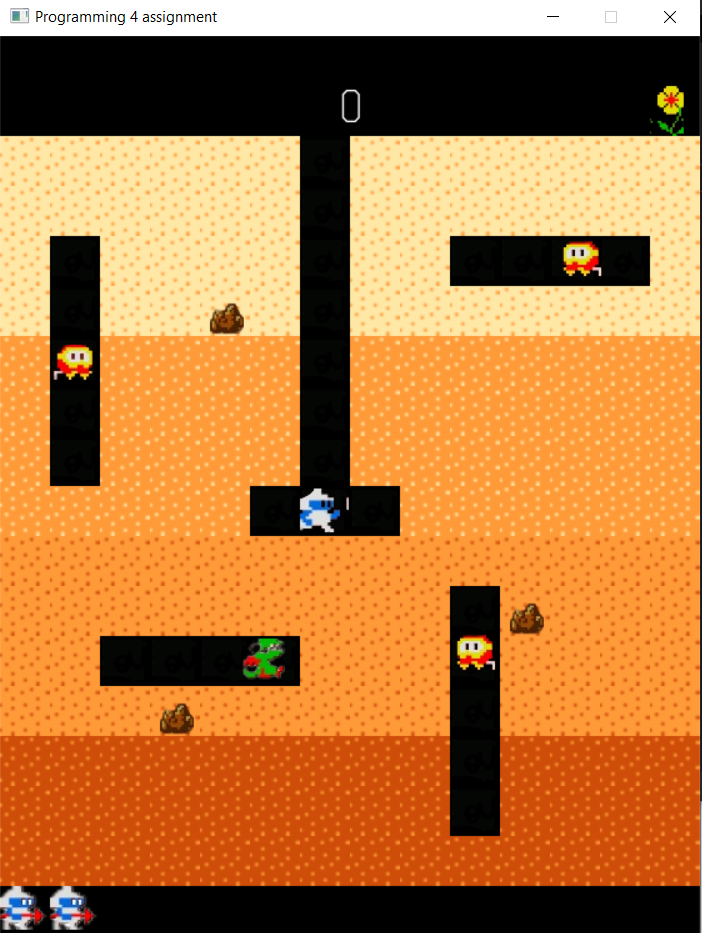
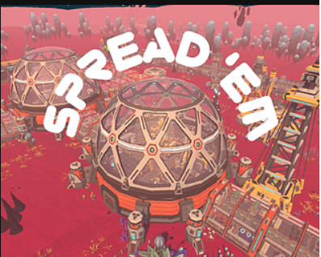
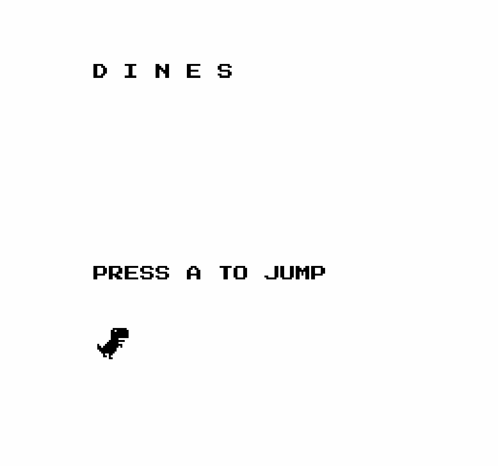
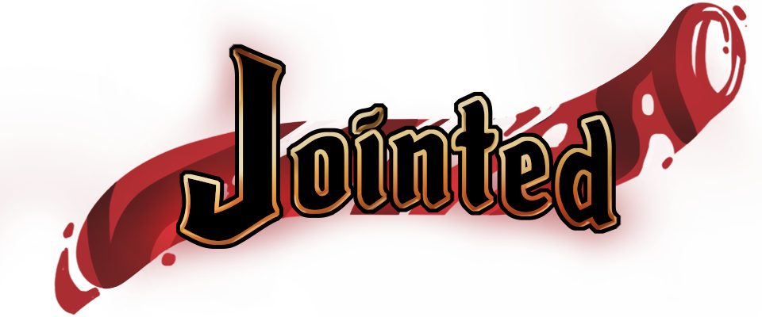
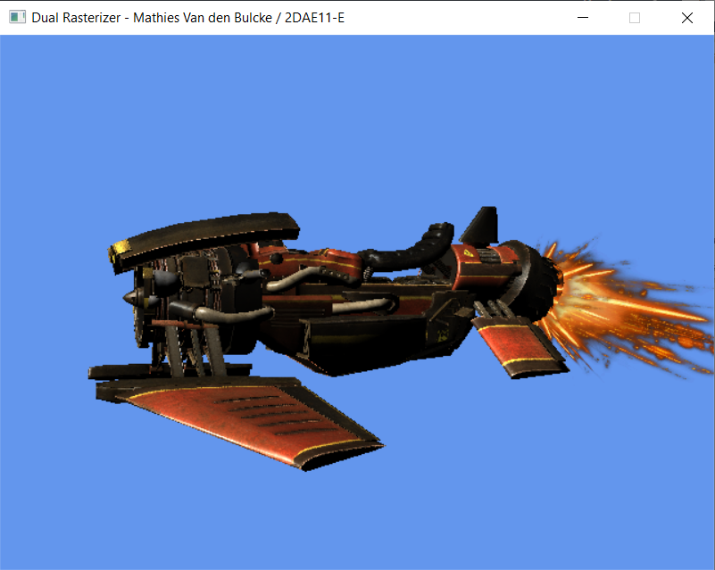
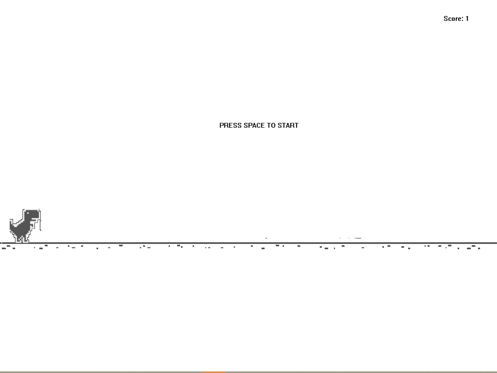
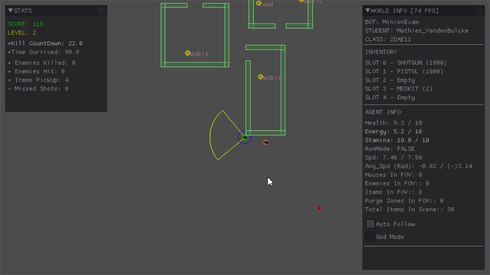

Minigin
This project is a Dig Dug remake made in C++. The goal of this project was to
create our own game engine, starting from the bare minimum. And then create
a given game with it to show its capabilities. For more information, you can take a look at the Github repository.

Spread 'Em
Project made for Unwrap Jam 2025 together with 2 other programmers. We made the game in Unity.
We ended up finishing 2nd place in the jam. During this project I learned a lot of new things about
Unity and how to work with a team of programmers. Find out more about the game on our Itch.io page.

DiNES
This was a group project created for an elective during my first semester of second year at Howest DAE.
It thought us 6502 assembly, which was not only a lot of fun, but also helped me understand how CPU's work better.
We decided to create the google dinosaur game in assembly, which ended up looking great.

Jointed
For the Game Projects course at Howest DAE, we were divided into groups to create a game.
My group decided to create a 2D platformer with a unique mechanic: the 2 players are connected by a curse.
This means the players need to time their movements and actions to progress through the level and collecting all breadcrumbs.
The game is called Jointed, and it was created using the Unity engine.
I was one of 3 programmers in our group.

Dual Rasterizer
For the graphics programming course at Howest DAE we had to create a dual rasterizer for our exam project.
We had to create a program that can switch between a software rasterizer and a hardware rasterizer.
This project helped me understand the strenght of GPU's and how they work.
It also taught me how 3D rendering works behind the scenes, which was very interesting.

Director AI Research
A research project exploring how Director AI creates dynamic game experiences by adapting
enemy spawns and pacing based on player stress levels, inspired by games like Left 4 Dead
and Alien Isolation.

Lua-made Game
For one of my courses at Howest DAE, I had to create a game using the Lua programming language.
For this I did a remake of the google dinosaur game.
The game has a simple C++ game engine behind the scenes, which I can communicate with using Lua scripts.

AI Zombie Survivor
Simple AI agent that survives in a zombie apocalypse scenario. Made for Howest DAE.